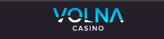

Браузер
Мобильная версия через браузер часто самый простой старт: не требует установки, но зависит от вкладок и кэша.
Запросы volna casino скачать и скачать volna casino обычно означают желание закрепить доступ на телефоне: либо через приложение, либо через удобную мобильную версию в браузере. Аналогично формулировки волна казино скачать и скачать волна казино отражают ожидание «одной кнопки» — но в реальности важнее понять источник установки и отличать штатные сценарии от сторонних предложений.
Когда пользователь ищет приложение volna casino или volna casino apk, он часто хочет уменьшить количество шагов до игры. Это разумно, если установка происходит из проверенного канала и сопровождается обновлениями. Параллельно популярны запросы мобильная версия volna casino и volna casino на телефон — они подчёркивают, что мобильность важнее конкретного формата (приложение vs браузер).
Ниже — спокойный разбор: что означает «скачать» в контексте бренда, как сочетать установку с безопасностью, как связать мобильный доступ с игрой и бонусами, и какие шаги помогают не потерять аккаунт при смене устройства.

Мобильная версия через браузер часто самый простой старт: не требует установки, но зависит от вкладок и кэша.
Приложение может дать более предсказуемый ярлык на экране и привычный вход, если установка официальна.
Регулярные обновления важны для стабильности и безопасности — не откладывайте их бесконечно.
Связанные страницы: казино, официальный сайт, бонусы.
В широком смысле «скачать Volna Casino» — это попытка закрепить сервис как приложение на устройстве или организовать удобный быстрый доступ. В узком смысле это может означать конкретный файл установки, если платформа предлагает такой сценарий. Важно не смешивать желание «быстро» с установкой из неизвестного источника: для запросов volna casino apk особенно критично проверять происхождение пакета.
Запрос мобильная версия volna casino часто идёт от пользователей, которые не хотят ничего устанавливать. Это нормальный путь: современные мобильные браузеры способны отображать адаптивную верстку стабильно, если сеть в порядке. Минус — больше риска потерять вкладку среди десятка других, если не закрепить доступ.
Фраза volna casino на телефон объединяет оба подхода. Пользователю важно, чтобы кнопки были крупными, текст читался, а формы входа не «прыгали» при появлении клавиатуры. Поэтому при выборе формата стоит оценить не только маркетинговые обещания, но и личные привычки: как вы обычно пользуетесь сервисами на телефоне.
Связка с брендом скачать волна казино также включает ожидание единого стиля. Если после установки интерфейс выглядит иначе, чем в браузере на официальной странице, это повод остановиться и перепроверить канал установки через материал официальный сайт.
Типовой сценарий для приложения: пользователь находит раздел загрузки на сервисе, скачивает пакет или переходит в магазин приложений (если так предусмотрено), устанавливает, затем выполняет вход. Для браузерной мобильной версии сценарий короче: открыть сайт, добавить на экран «Домой» при необходимости, авторизоваться.
После установки важно проверить разрешения. Если приложение запрашивает необычный набор доступов, это сигнал для внимательного чтения и сравнения с ожидаемым поведением сервиса. Не подтверждайте всё подряд «чтобы быстрее».
Игровой контекст раскрыт на странице играть: там про слоты, онлайн-сессии и то, как мобильный формат влияет на восприятие игры. Если вы планируете активные акции, параллельно откройте бонусы и убедитесь, что условия одинаково понятны и в приложении, и в браузере.
Если вы ещё не создали аккаунт, сначала пройдите регистрацию на корректной странице, а уже затем переносите привычки на мобильное устройство.
Первое преимущество мобильного доступа — удобство коротких сессий. Можно зайти на несколько минут без «ритуала» с компьютером, если вы выстроили дисциплину времени и лимитов.
Второе преимущество — ярлык и привычка. Приложение или закреплённая вкладка снижает вероятность ошибиться адресом при следующем входе. Это косвенно поддерживает безопасность.
Третье преимущество — лучше сочетается с материалом про зеркало в периоды нестабильности: на телефоне проще быстро проверить альтернативный вход, если вы заранее знаете признаки корректной страницы.
Четвёртое преимущество — проще возвращаться к обзорным текстам: главная и отзывы помогают сопоставить ожидания, пока вы настраиваете устройство.
Если вы используете Android и видите запросы про volna casino apk, относитесь к файлу как к потенциально чувствительному: проверяйте подпись источника, избегайте установки из случайных директорий мессенджеров и не включайте опции «установка из неизвестных источников» без необходимости.
На iOS сценарии часто завязаны на магазин приложений или веб-версию — у каждой платформы свои ограничения. Здесь полезно следовать официальным инструкциям внутри сервиса, а не сторонним «гайдам» с сомнительными ссылками.
Если мобильный интернет нестабилен, скачивание может обрываться. В таких случаях лучше дождаться нормальной сети, чем многократно перезапускать установку и получать непредсказуемое состояние приложения.
Текст носит информационный характер. Способы установки и требования платформы уточняйте на стороне выбранного ресурса.
Нет. Многим достаточно мобильной версии в браузере. Приложение — это удобство, а не универсальное требование.
Потому что файл может быть подменён. Риски включают кражу данных и компрометацию устройства. Используйте официальные каналы, описанные на сервисе.
Зависит от качества канала установки и ваших привычек. Оба варианта могут быть безопасными, если вы не сохраняете пароли в открытом виде и не входите на подозрительных страницах.
После входа откройте бонусы и проверьте, одинаково ли отображаются условия на телефоне. Если текст обрезан или неудобен, переключитесь на широкий экран для чтения.
На странице казино — там акцент на онлайн-игру и слоты.
Переустановите приложение из проверенного канала или заново закрепите браузерный доступ. Затем выполните вход и проверьте настройки безопасности профиля.